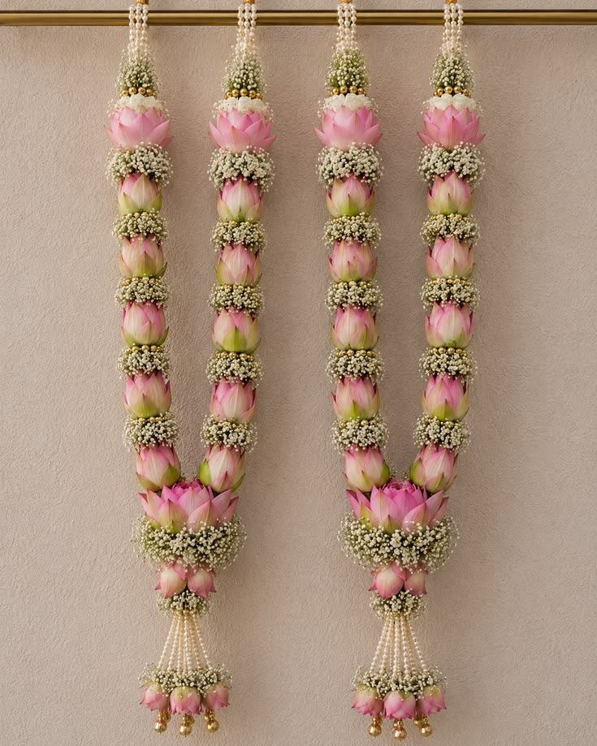
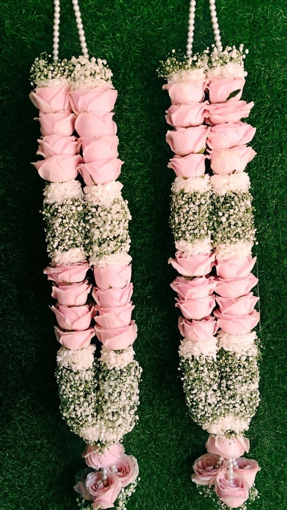

Our Signature Collections
Click on any collection to view designs, approximate prices, and add to your cart

4 DesignsMarriage Garlands
Traditional wedding malai crafted with roses, lotus & fresh jasmine.
View Collection →
4 DesignsReception Garlands
Lightweight pastel & orchid designs crafted for reception style.
View Collection → 4 Designs
4 Designs
Temple Garlands
Divine tulsi, sevvanthi, and jasmine garlands for auspicious poojas.
View Collection → 4 Designs
4 Designs
Custom Designs
Special personalized garlands made to your exact color theme.
View Collection →